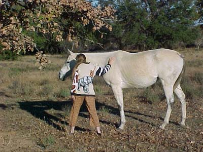

11/22/01 & 3/16/03 & 06/11/04
Lovely-What
9 yr old TB mare
In Foal again for an '05 baby
Only a couple of months to go.
She's pretty well balanced for a TB, and, so far, doesn't have a flighty temperment.
She's got nice movement and a playful attitude.
There's no topline, but she's up to a good weight now (the baby took a lot out of her).
Curious, instead of afraid... Once she figured out I wanted her to run around, her tail went up and she started playing.
Notice the feet. She was doing the Pepe Le Pew canter - just boing, boing, boing.
Not balanced, but relaxed and having fun.
I think she liked the attention. We just ran around in the field together.
When I stopped, she came right back up to us.

She'll make a good broodmare. She seems very sensible.
When we were done, she went back to her cows.